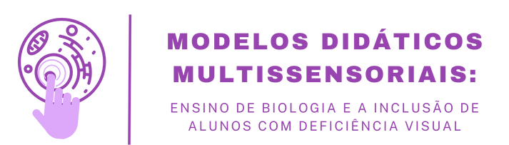

O estudo da Biologia frequentemente envolve a observação de estruturas microscópicas, organismos complexos e processos dinâmicos, o que pode representar um obstáculo para alunos com deficiência visual.
| Limitação dos Recursos Tradicionais | A Necessidade de Inovação |
|---|---|
| Modelos táteis, apesar de importantes, podem não ser suficientes para transmitir a complexidade de conceitos biológicos. A falta, de recursos sonoros limita a autonomia e a imersão dos alunos no processo de aprendizagem. |
A carência de materiais didáticos inclusivos e a necessidade de integrar novas tecnologias ao ensino justificam a busca por soluções inovadoras que promovam a inclusão e a igualdade de oportunidades no aprendizado de Biologia. |